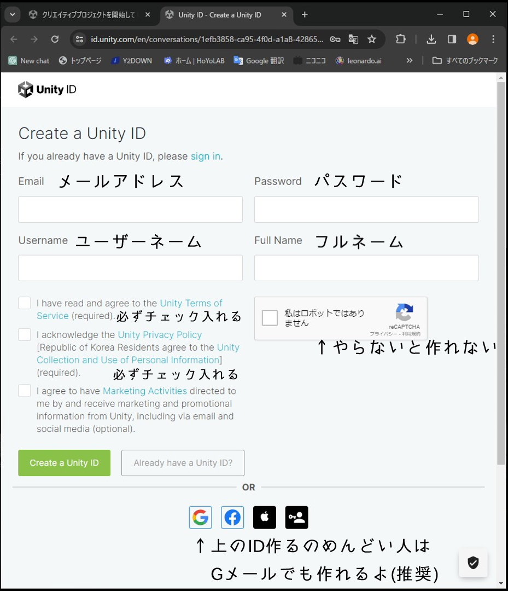
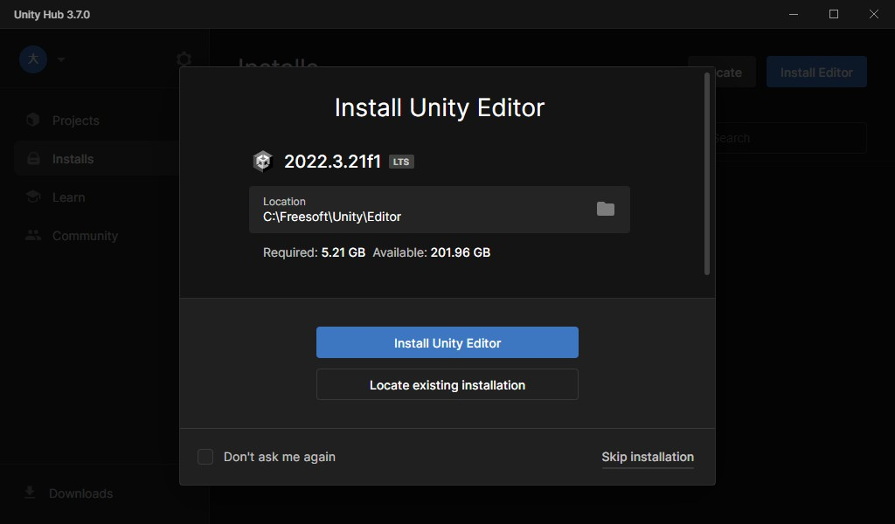

UnityHub起動後の手順
Unityのアカウントを作る

UnityHubを起動すると最初はこのような画面でお出迎えされます。
既にアカウントがある人はSign inを選んでください。
殆どの人がアカウントを持っていないと思うので、Sign inボタンの下にあるNew to Unity? Create accountのCreate accountをクリックしてください
UnityIDを作る
既にアカウントを持ってる人は読み飛ばしてください。
アカウント作成を押すとこのページに遷移します。UnityIDを作れ圧がすごいですが、下の方にスクロールするとGoogleのアカウントで作れるボタンがあります。パスワードとかユーザーネームとか忘れちゃうので、覚えててくれるGoogleアカウントで作った方がいいと思います。ゲーム開発用のGoogleアカウントをこの時点で作っておいた方がいいかもしれません。
IDなんか覚えていられる自信がないのでGoogleアカウントで作る人はGoogleアカウントでサインインして、Unityで使いたいアカウントを選択。次に出てくる次へをクリックするだけでUnityアカウントを作れます
UnityIDを作りたい人は上の画像に従って入力するべき情報を入力してください。ちなみにパスワードはUnityIDのものです。Eメールのパスワードではありません。Eメールの欄に入力したアドレスにメールが届くので、確認手順を踏めばアカウントが使えるようになります。
Unityのエディタをインストールする
その前にUnityHubを日本語化する
ここからUnityを落としてもいいのですが日本語化パッチを同時に突っ込みたいのでskip installationを押すなりその辺の空白部分を押して閉じてください。
その前に英語だと何が何だかよくわからないのでUnityHubを日本語化します。
上の画像の丸で囲った歯車マークで設定を開いてください。
設定が開いたらAppearanceを選択し、Languageから日本語を選択してください
そうするとお先真っ暗だった英語祭りから知ってる言語に早変わりします。うれしいね
ようやくUnityエディタのインストールをする
エディタのインストールを始めます。
赤線でかこったエディタをインストールと書いてある青いボタンを押してください
そうしたら現行のUnityエディタをインストールします。2021.3.36f1のほうを今回はインストールしました。
モジュールを追加できるウインドウに飛びます。
AndroidとWindowsのビルドツールが最初からインストールするチェックが入っています。青いチェックマークがインストールするモジュールです。
一番下までスクロールしていくと日本語の言語パックと書かれた項があると思います。UnityHubを日本語化していればチェックが入っているかと思いますが念のため。
日本語化パッチとAndroidとWindowsのビルドツールにチェックが入っているのを確認して右下の続行するをクリックしてください。
利用規約がうんぬんかんぬんと言われます。同意するところにチェックを打って続行してください。
そうすればインストールが開始されます。結構かかります。